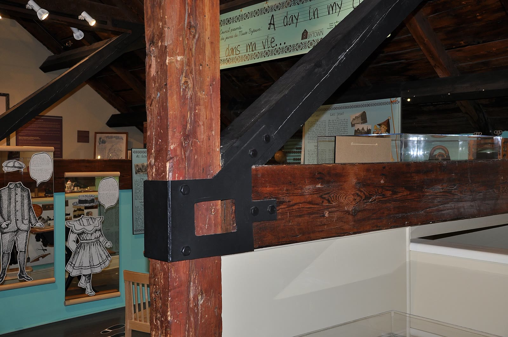
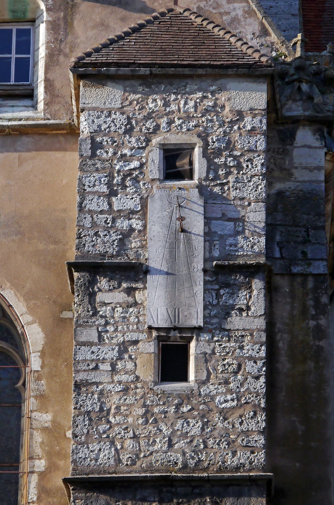
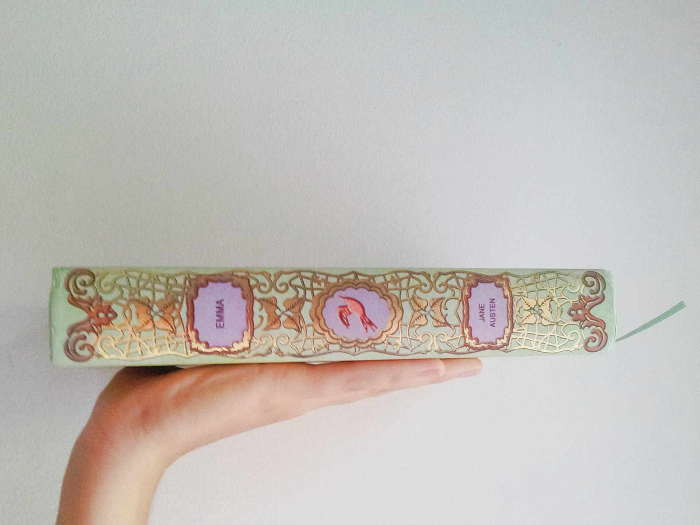
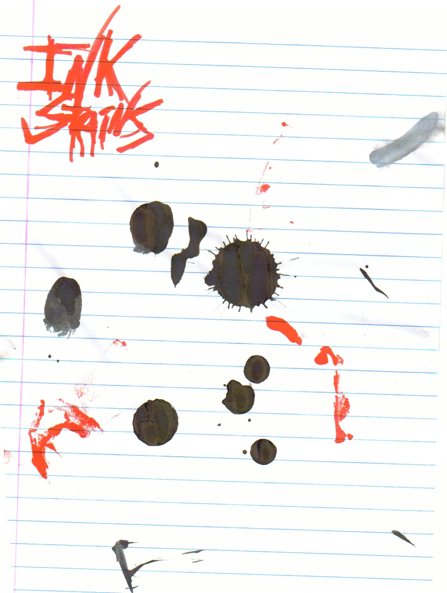

SHOT 01
駅から塔へ


- 画面
- 駅屋根、レール際、街路端、アーチ状フレームを前景に置き、その奥に駅の建築、さらに古い天文台塔と空の鐘枠を関係づける。
- 意図
- 矛盾の舞台を置く
- 尺
- 7秒
- カメラ
- wide / slow_push
- 成立条件
- 最初に空の鐘枠、次に塔と駅の関係が読める。
- 描かないこと
- 鐘、発光、作動機械、原因を示す人物、鳴動の説明を描かない。
↳ この幕の参照を後続の反復へ渡す。
fff-composition-expansion-wave1-001
180秒 / 6幕 / 19 shots
00:00 → 03:00
駅と塔の距離から、空の取付点と正午の余白へ近づく。
↳ この幕の参照を後続の反復へ渡す。
fff-composition-expansion-wave1-001

↳ この幕の参照を後続の反復へ渡す。
fff-composition-expansion-wave1-001


↳ この幕の参照を後続の反復へ渡す。
fff-composition-expansion-wave1-001
修理の手元から静止した蛾へ移り、時計面へ視線を寄せる。


↳ この幕の参照を後続の反復へ渡す。
fff-beat2-composition-board-001


↳ この幕の参照を後続の反復へ渡す。
fff-beat2-composition-board-001


↳ この幕の参照を後続の反復へ渡す。
fff-beat2-composition-board-001
台帳を開き、空欄と薄れる記録の層を順に追う。


↳ この幕の参照を後続の反復へ渡す。
fff-composition-expansion-wave1-001


↳ この幕の参照を後続の反復へ渡す。
fff-composition-expansion-wave1-001


↳ この幕の参照を後続の反復へ渡す。
fff-composition-expansion-wave1-001
匿名の制度空間から二つの仮説を経て、閉じた会議室へ退く。


↳ この幕の参照を後続の反復へ渡す。
fff-beat4-composition-counterexample-001


↳ この幕の参照を後続の反復へ渡す。
fff-beat4-composition-counterexample-001

↳ この幕の参照を後続の反復へ渡す。
fff-beat4-composition-counterexample-001
人物、蛾、制度の候補を同じ重さで並べ、一画面へ戻す。


↳ 先行する人物・対象物・制度の参照を同一IDで継ぐ。
fff-composition-expansion-wave2-001

↳ 先行する人物・対象物・制度の参照を同一IDで継ぐ。
fff-composition-expansion-wave2-001
↳ 先行する人物・対象物・制度の参照を同一IDで継ぐ。
fff-composition-expansion-wave2-001
↳ 先行する人物・対象物・制度の参照を同一IDで継ぐ。
fff-composition-expansion-wave2-001
時間と名前を等分し、未記入の本から冒頭の空の塔へ戻る。
↳ 時計と台帳の参照を終幕の対へ継ぐ。
fff-composition-expansion-wave2-001

↳ 台帳の空欄と列を閉じた本へ継ぐ。
fff-composition-expansion-wave2-001
↳ 冒頭の塔と駅を同一参照で戻す。
fff-composition-expansion-wave2-001
先行ショット → 後続ショット
shot-b01-01 / shot-b01-03shot-b06-03
冒頭の空の塔枠と駅の奥行きを終幕へ戻す。shot-b02-02 / shot-b02-03shot-b05-02 / shot-b05-04
静止した真鍮の蛾を機能候補と三対象の反復へ継ぐ。shot-b04-01 / shot-b04-02 / shot-b04-03shot-b05-03 / shot-b05-04
制度の反復と無人空間を動機候補へ継ぐ。shot-b03-01 / shot-b03-02 / shot-b03-03shot-b06-01 / shot-b06-02
空欄と列の形を終幕の名前欄と閉じた本へ継ぐ。shot-b02-03shot-b06-01
時計面を時間と名前の等分画面へ継ぐ。28 references
| ID | Creator | Page | License | Package | Local path | SHA256 |
|---|---|---|---|---|---|---|
| ref-b02-s01-precision-handwork | giridibyaranjan | source | CC BY-SA 4.0 | fff-beat2-composition-board-001 | artifacts/beat2-composition-board/composition-assets/ref-b02-s01-precision-handwork.jpg | 42e1d3963eea… |
| ref-b02-s01-watch-repair-workbench | SerChevalerie | source | CC0 1.0 | fff-beat2-composition-board-001 | artifacts/beat2-composition-board/composition-assets/ref-b02-s01-watch-repair-workbench.jpg | 207933084e53… |
| ref-b02-s02-aged-handwritten-letter | Lainey Powell | source | CC BY 2.0 | fff-beat2-composition-board-001 | artifacts/beat2-composition-board/composition-assets/ref-b02-s02-aged-handwritten-letter.jpg | 6b98a5fa94c4… |
| ref-b02-s02-metal-butterfly-brooch | Jane023 (photographer/uploader; own work) | source | CC0 1.0 | fff-beat2-composition-board-001 | artifacts/beat2-composition-board/composition-assets/ref-b02-s02-metal-butterfly-brooch.jpg | ac4df2e88ff0… |
| ref-b02-s03-brass-clock-dial | Brooke Campbell / bcampbell | source | CC0 1.0 | fff-beat2-composition-board-001 | artifacts/beat2-composition-board/composition-assets/ref-b02-s03-brass-clock-dial.jpg | acc9849b02b7… |
| ref-b02-s03-vintage-watch-0915 | Joe Haupt | source | CC BY-SA 2.0 | fff-beat2-composition-board-001 | artifacts/beat2-composition-board/composition-assets/ref-b02-s03-vintage-watch-0915.jpg | 80abb1498c2e… |
| ref-b04-s01-conference-backs | Manuel Schneider | source | CC BY-SA 3.0 | fff-beat4-composition-counterexample-001 | artifacts/beat4-composition-counterexample/composition-assets/ref-b04-s01-conference-backs.jpg | 79e17d1982c6… |
| ref-b04-s01-frosted-partition | Timo Newton-Syms | source | CC BY-SA 2.0 | fff-beat4-composition-counterexample-001 | artifacts/beat4-composition-counterexample/composition-assets/ref-b04-s01-frosted-partition.jpg | f55ecaa635f0… |
| ref-b04-s02-card-catalogue | Carolina Prysyazhnyuk | source | CC BY-SA 2.0 | fff-beat4-composition-counterexample-001 | artifacts/beat4-composition-counterexample/composition-assets/ref-b04-s02-card-catalogue.jpg | 23aaf60edcd0… |
| ref-b04-s02-time-recorder | Loozrboy | source | CC BY-SA 2.0 | fff-beat4-composition-counterexample-001 | artifacts/beat4-composition-counterexample/composition-assets/ref-b04-s02-time-recorder.jpg | ea2732ff8205… |
| ref-b04-s03-closed-meeting-room | Het Nieuwe Instituut - Architecture Collection; photographer unknown | source | No known copyright restrictions | fff-beat4-composition-counterexample-001 | artifacts/beat4-composition-counterexample/composition-assets/ref-b04-s03-closed-meeting-room.jpg | e6f06540dba9… |
| ref-b04-shared-general-ledger | Plantijnse Drukkerij | source | No known copyright or other restrictions; free to use and reuse | fff-beat4-composition-counterexample-001 | artifacts/beat4-composition-counterexample/composition-assets/ref-b04-shared-general-ledger.jpg | 74d83e8fbad3… |
| ref-w1-b01-s01-harvard-observatory | Daderot | source | Public domain (author dedication) | fff-composition-expansion-wave1-001 | artifacts/composition-expansion-wave1/composition-assets/ref-w1-b01-s01-harvard-observatory.jpg | 6e1376fa2b4f… |
| ref-w1-b01-s01-kreiensen-station | Michael Gäbler | source | CC BY 3.0 | fff-composition-expansion-wave1-001 | artifacts/composition-expansion-wave1/composition-assets/ref-w1-b01-s01-kreiensen-station.jpg | 49b3136c701d… |
| ref-w1-b01-s02-beam-junction | shankar s. | source | CC BY 2.0 | fff-composition-expansion-wave1-001 | artifacts/composition-expansion-wave1/composition-assets/ref-w1-b01-s02-beam-junction.jpg | 05aacc6386c2… |
| ref-w1-b01-s02-wood-joints | Shyamal | source | CC0 | fff-composition-expansion-wave1-001 | artifacts/composition-expansion-wave1/composition-assets/ref-w1-b01-s02-wood-joints.jpg | 3258615d9b6b… |
| ref-w1-b01-s03-belfry-interior-art | William Henry Hunt | source | CC0 | fff-composition-expansion-wave1-001 | artifacts/composition-expansion-wave1/composition-assets/ref-w1-b01-s03-belfry-interior-art.jpg | 39602c0536b4… |
| ref-w1-b01-s03-noon-mark | Poulpy | source | CC BY-SA 3.0 | fff-composition-expansion-wave1-001 | artifacts/composition-expansion-wave1/composition-assets/ref-w1-b01-s03-noon-mark.jpg | 1c68f99c68f8… |
| ref-w1-b03-s01-book-in-hand | AgustinaCC | source | CC0 | fff-composition-expansion-wave1-001 | artifacts/composition-expansion-wave1/composition-assets/ref-w1-b03-s01-book-in-hand.jpg | 6fc36da6028e… |
| ref-w1-b03-s01-page-turning | Pics_Pd | source | CC0 | fff-composition-expansion-wave1-001 | artifacts/composition-expansion-wave1/composition-assets/ref-w1-b03-s01-page-turning.jpg | d846f48b836c… |
| ref-w1-b03-s02-blank-book | Trey Jones | source | CC0 | fff-composition-expansion-wave1-001 | artifacts/composition-expansion-wave1/composition-assets/ref-w1-b03-s02-blank-book.jpg | 312ac0465762… |
| ref-w1-b03-s02-ledger-geometry | RaphaelQS | source | CC0 | fff-composition-expansion-wave1-001 | artifacts/composition-expansion-wave1/composition-assets/ref-w1-b03-s02-ledger-geometry.jpg | ccbb058ad175… |
| ref-w1-b03-s03-ink-stains | Menetekel | source | Public domain (author dedication) | fff-composition-expansion-wave1-001 | artifacts/composition-expansion-wave1/composition-assets/ref-w1-b03-s03-ink-stains.jpg | 96350f03a1bc… |
| ref-w1-b03-s03-old-paper | Smartscrutiny | source | CC BY-SA 4.0 | fff-composition-expansion-wave1-001 | artifacts/composition-expansion-wave1/composition-assets/ref-w1-b03-s03-old-paper.jpg | de3156d47386… |
| ref-w2-b05-fate-blank-card | Corn cheese | source | CC BY-SA 4.0 | fff-composition-expansion-wave2-001 | artifacts/composition-expansion-wave2/reference-assets/ref-w2-b05-fate-blank-card.jpg | c970d41f104d… |
| ref-w2-b05-s01-horizon-silhouette | Chris Roe | source | CC0 1.0 | fff-composition-expansion-wave2-001 | artifacts/composition-expansion-wave2/reference-assets/ref-w2-b05-s01-horizon-silhouette.jpg | 2f5cbd4befae… |
| ref-w2-b05-s02-brass-plate | U.S. Army Corps of Engineers Savannah District; photo by Jim Jobling | source | Public Domain (U.S. federal government work) | fff-composition-expansion-wave2-001 | artifacts/composition-expansion-wave2/reference-assets/ref-w2-b05-s02-brass-plate.jpg | d9d8146351e2… |
| ref-w2-b06-s02-closed-book | J.Dncsn | source | CC BY-SA 3.0 | fff-composition-expansion-wave2-001 | artifacts/composition-expansion-wave2/reference-assets/ref-w2-b06-s02-closed-book.jpg | e69f1a06db29… |
{kind=link}
{kind=link}
{kind=link}
{kind=link}
.jpg){kind=link}
.jpg){kind=link}
{kind=link}
{kind=link}
{kind=link}
.jpg){kind=link}
{kind=link}
{kind=link}
{kind=link}
.jpg){kind=link}
{kind=link}
{kind=link}
{kind=link}
{kind=link}
{kind=link}
{kind=link}
.jpg){kind=link}
.jpg){kind=link}
{kind=link}